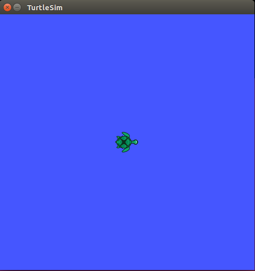

Understanding ROS Nodes
ROS/ Tutorials/ UnderstandingNodes
描述：本文介绍ROS图形概念，并讨论了命令行工具 roscore, rosnode, 和rosrun 的使用。
Prerequisites
安装ros-tutorials元功能包，使用以下命令：
$ sudo apt-get install ros-<distro>-ros-tutorials
Replace <distro> with the name of your ROS distribution (e.g. indigo, jade, kinetic, noetic)
Quick Overview of Graph Concepts
Nodes: 使用ROS与其他节点通信的可执行程序。
Messages: ROS中订阅或发布一个话题时使用的数据类型。
Topics: 节点通过话题发布数据（Messages），通过订阅话题接受数据（Messages）。
Master: ROS的 Name 服务（帮助节点之间建立连接）。
rosout: 相当于stdout/stderr。
roscore: Master + rosout + parameter server (参数服务器)。
Nodes
节点（Nodes） 不过是 ROS package 的可执行文件。ROS 节点使用 ROS 用户库（client library）与其他节点通信。节点能够发布或订阅话题（topics）。节点也能够提供或使用服务（service）。
Client Libraries
ROS 用户库（client library）允许节点使用不同的编程语言实现通信：
roscpp = c++ client library
roscpp = python client library
roscore
使用ROS的第一步就是运行roscore：
$ roscore
命令行将出现类似以下的信息：
... logging to /home/ml/.ros/log/1fbff624-fcd4-11ec-9814-000c2963efd7/roslaunch-ml-ros-kinetic-3041.log
Checking log directory for disk usage. This may take awhile.
Press Ctrl-C to interrupt
Done checking log file disk usage. Usage is <1GB.
started roslaunch server http://ml-ros-kinetic:34205/
ros_comm version 1.12.17
SUMMARY
========
PARAMETERS
* /rosdistro: kinetic
* /rosversion: 1.12.17
NODES
auto-starting new master
process[master]: started with pid [3052]
ROS_MASTER_URI=http://ml-ros-kinetic:11311/
setting /run_id to 1fbff624-fcd4-11ec-9814-000c2963efd7
process[rosout-1]: started with pid [3065]
started core service [/rosout]
rosnode
打开一个新终端，并使用rosnode来查看roscore运行了哪些节点。请保证roscore运行终端的启动。
Notes：当打开新终端时，环境变量将会重置，~/.bashrc文件将会执行。如果运行类似rosnode的ROS命令出现错误，那么可能需要添加一些环境变量到你的~/.bashrc文件，或者手动source。
rosnode将展示当前运行的ROS节点的有关信息。输入rosnode list命令以获取当前所有活跃节点：
$ rosnode list
命令行输出
/rosout
表明当前仅有rosout一个节点运行。rosout的作用是记录节点的调试输出。
使用rosnode info命令可以获取特定节点的相关信息：
$ rosnode info /rosout
以下就是rosout的有关信息，例如发布了/rosout_agg...
--------------------------------------------------------------------------------
Node [/rosout]
Publications:
* /rosout_agg [rosgraph_msgs/Log]
Subscriptions:
* /rosout [unknown type]
Services:
* /rosout/get_loggers
* /rosout/set_logger_level
contacting node http://ml-ros-kinetic:41947/ ...
Pid: 3065
rosrun
使用rosrun可以启动ROS节点。rosrun使用package name和node name直接运行节点，而不需要package和node的完整路径：
$ rosrun [package_name] [node_name]
现在，我们使用该命令运行turtlesimpackage下的turtlesim_node节点。
打开新终端，输入：
$ rosrun turtlesim turtlesim_node
将弹出以下窗口：

Notes：这只乌龟的样式可能与你的不同。这是因为ROS提供了许多乌龟的样式，可以说是官方的小彩蛋。
打开新终端，重新输入：
$ rosnode list
命令行输出：
/rosout
/turtlesim
ROS一个比较有用的特性就是，可以在命令行修改节点的名称。
关闭turtlesim终端以关闭节点（或者在该终端使用ctrl+c）。然后重新运行，并且需要在后面添加 [重映射参数（Remapping Argument）](http://wiki.ros.org/Remapping Arguments)：
$ rosrun turtlesim turtlesim_node __name:=my_turtle
重新输入rosnode list：
$ rosnode list
命令行输出：
/my_turtle
/rosout
Notes：如果输出仍然为/turtlesim，说明你用了ctrl+c而不是关闭窗口。此时，可以尝试先使用rosnode cleanup，然后在输入rosnode list。
当输出为/my_turtle时，可以使用rosnode ping测试节点是否启动成功：
$ rosnode ping my_turtle
rosnode: node is [/my_turtle]
pinging /my_turtle with a timeout of 3.0s
xmlrpc reply from http://ml-ros-kinetic:46881/ time=0.463009ms
xmlrpc reply from http://ml-ros-kinetic:46881/ time=1.638889ms
xmlrpc reply from http://ml-ros-kinetic:46881/ time=1.659870ms
xmlrpc reply from http://ml-ros-kinetic:46881/ time=1.644135ms
Conclusion
涵盖的内容：
roscore = ros + core : master (为 ROS 提供 name service) + rosout (stdout / stderr) + parameter server (参数服务器)；
rosnode = ros + node : 获取节点信息的 ROS 工具；
rosrun = ros + run : 运行指定package下的指定node；